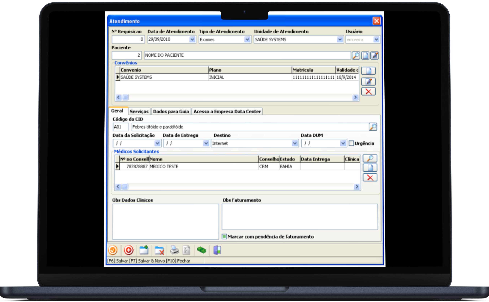
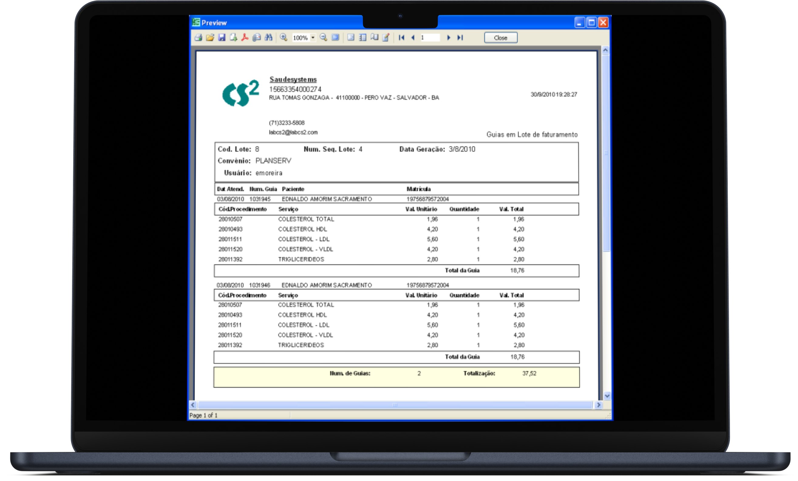
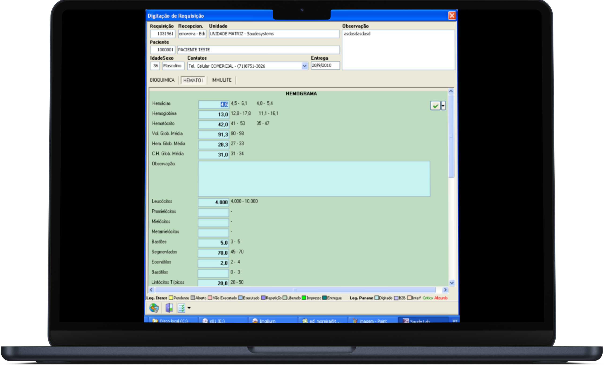
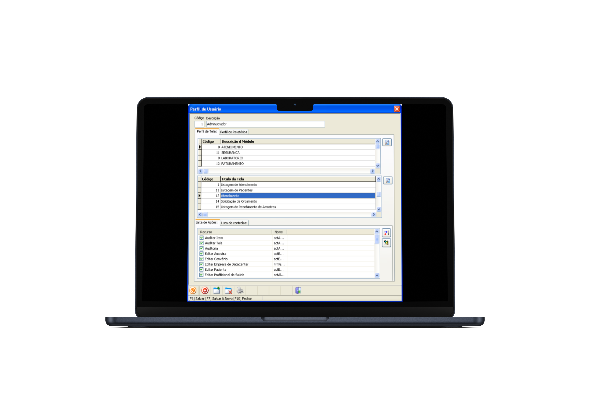

Conheça nossos modulos

Gerenciamento de Pacientes e Requisições 
Para garantir eficiência e organização no fluxo de atendimento, o sistema oferece controle abrangente para gestão de exames, desde a restrição de convênios específicos até a inclusão e exclusão de exames, filtragem de informações para relatórios gerenciais e emissão de etiquetas agrupadas.
Além disso, o sistema assegura o controle de amostras repetidas, sem duplicação de dados, e permite a rastreabilidade na entrega de laudos, eliminando o uso de cadernos físicos e promovendo uma gestão segura e transparente.

Cadastro de Parâmetros Administrativos
O sistema deve possibilitar a inserção de dados específicos da empresa, permitindo o cadastro de Unidades de Atendimento com filtros por unidade
Além disso, é possível padronizar convênios e configurar uma tabela de procedimentos, oferecendo flexibilidade e controle sobre os dados essenciais.

Faturamento de Convênios
Rotinas bem elaboradas direcionadas às regras de cada convênio.
Possui Pré-faturamento, conferência de guias, e geração de lotes para faturamento eletrônico.
Efetuar faturamento de exames individualizados com dados solicitados pelo SUS

ATENDIMENTO AO PACIENTE
O SSWEB possui funções que facilitam e agilizam o processo de coleta das amostras. Esses processos fazem com que seu atendimento seja rápido, evitando filas e organizando amostras de maneira fácil para serem analisadas.
É possível fazer coletas no local, organizando as amostras para emissão dos resultados.
Todas as amostras podem ser identificadas através de códigos de barras, organizadas por setores de resultados, além da possibilidade de impressão da ficha de bancada.

Comunicação com Equipamentos de Automação Laboratorial
Reduz a incidência de erros na digitação.
Envio do resultado direto para o sistema armazenando informações de usuário, data e hora da execução.
Permitir o envio de amostras e exames para o aparelho sendo uma comunicação Bi-direcional ou Uni-direcional conforme necessidades do aparelho.

ATENDIMENTO AO PACIENTE
O SSWEB possui funções que facilitam e agilizam o processo de coleta das amostras. Esses processos fazem com que seu atendimento seja rápido, evitando filas e organizando amostras de maneira fácil para serem analisadas.
É possível fazer coletas no local, organizando as amostras para emissão dos resultados.
Todas as amostras podem ser identificadas através de códigos de barras, organizadas por setores de resultados, além da possibilidade de impressão da ficha de bancada.

Transferência de Dados via B2B
O sistema deverá permitir a comunicação com outros sistemas para envio e recebimento de resultados
Rastreamento de amostras e resultados recebidos ou enviados através de sistemas
Gerenciar o faturamento dos exames recebidos por outro sistema